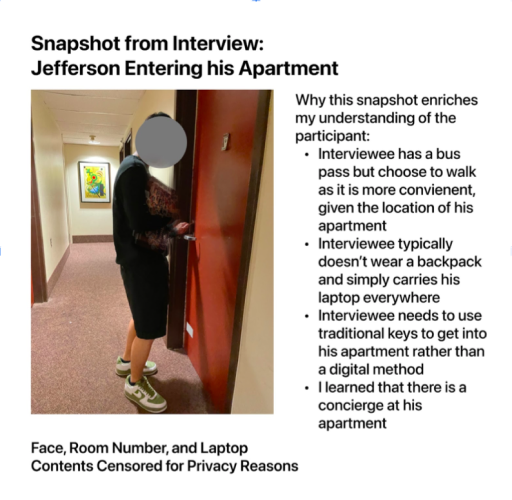

Role
Product Designer
Team
Fangcong Yin, UX Researcher
Margia Rounok, UX Researcher & Initial Character Designer
Christian Boswell, UX Researcher
Tool
Figma
Timeline
Sept 2021- Dec 2021
It must be stopped.
According to the FBI’s data, in 2020
Anti-Asian hate crimes rose 73%
with 279 reported hate crimes in 2020 compared to 161 in 2019.
How might we offer reassurance during complex situations as everyone’s response to crisis is vastly different?
Through this project, our group aims to understand the root issue of campus safety and what
types of support should be provided specifically for Asian American students living off-campus.
We hope to examine past trends that have led to the rise in feeling unsafe and the impact of
culture regarding unreported incidents within the Asian community.
Diagram of project process
At a wider scope.
Before narrowing our target group to Asian American students living off-campus, we decided to
understand the root issue of campus safety for minorities and females living off-campus at
Cornell University.
From our interviews we found that...
A majority of our respondents mentioned they tend to have a heightened sense of fear
walking off-campus.
For reasons attributed with poor off-campus lighting, less security measures of the
Cornell Blue Light Sytem, and less familiarity, our interviewees mentioned that they
feel a greater sense of wary when walking home alone from campus.
Students tend to spend extra money on transportation to ensure better safety.
Our interviewees tend to buy a bus pass voluntarily even after their free TCAT
bus pass during their first year at Cornell because 1) it is difficult to get
around Ithaca, outside of the local campus area and 2) the pass is relatively
cheap, costing $200 a year.
There is a greater sense of trust when using rideshare applications, like Uber
and Lyft, and tend resort to these applications 1) after bus hours 2) for
locations that tend to be more dangerous and 3) for the convenience.
Miro: Affinity Diagram on User Research
So what is the problem?
After long hours of studying, students often get caught staying on-campus until ungodly hours-
1, 2, up to 5 AM. During these times, buses stop running and rideshare options significantly
decrease. Students find themselves staying on-campus until buses start running again or walk
back home alone, worried for their safety.
We aim to give a greater sense of reassurance and feeling of comfort when students walk
home, all while being accessible and cheap. Safety should not be a luxury and all students
deserve it.
Narrowing down to our target group.
We found that...
Contextual Interview:

Who is the user?
Jacob Lee
“Hard work will always lead to success”
Age:
20
Occupation:
Student
College:
Cornell University
Asian Ethnic Group:
Laotian
Jacob Lee is a junior studying Computer Science within the College of
Engineering. He lives a ten minute walk away off-campus and primary modes of
transportation are walking or busing.
He has a determined attitude about life and believes that with enough effort and
hard work, anything is achievable. He values his safety, and takes on
responsibility not only for himself but especially for his loved ones.
Goals
- Become more connected to his community and utilizes the local resources and opportunities for a good academic standing and a decent job offer.
- Complete the academic year without sacrificing his physical and mental health and his safety.
Frustrations
- Wants to protest himself with the rise of Asian hate crimes but cannot buy or get safety products shipped within New York State (e.g. pepper spray)
- Feels alone and looked down upon because of the challenges being Asian because 1) racial tensions spiked due to COVID pandemic and 2) the few safety measures on campus for AAPI students